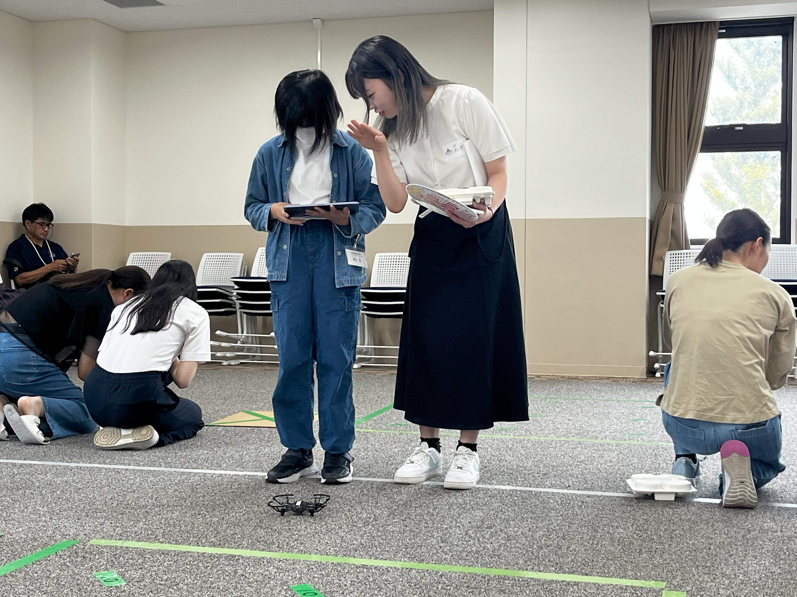
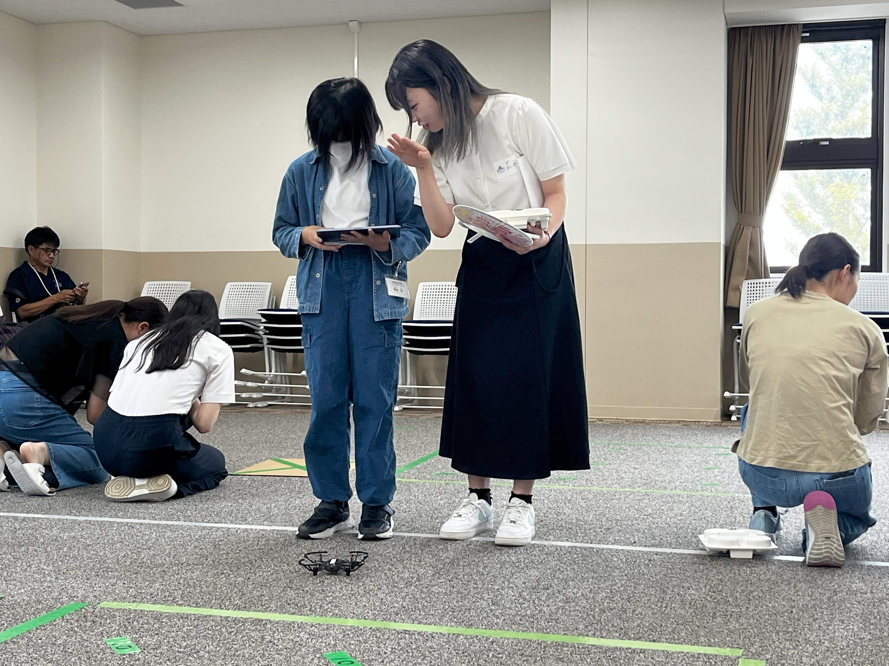

グループでの研究活動
-ドローン班-
「最先端技術で社会課題の分析から解決へ！」
ドローン班は、最先端の無人航空機技術を駆使して、空撮、農業、物流など多岐にわたる分野での応用及び様々なプロジェクトに取り組んでいます。
分析から問題解決まで、実践的なスキルを養うことを目指します。
夏休みや春休みの間には、先生と共に合宿を行い、実地での学びを深めます。
それぞれのチームが多様なテーマに取り組み、学生の成長を支援しています。
興味のある分野での活動を通じて、実践的な知識とスキルを習得します。
最新のドローン技術
最新のドローン技術を学び、実際に操作することで、実践的な知識を得る
社会的意義の理解
テクノロジーの社会的な意義を理解し、未来の社会に貢献する方法を学ぶ
チームでの活動
チームでのプロジェクトを通じて、コミュニケーション能力や問題解決能力を養う
水田班
ドローンを用いた撮影・画像解析により、水田の状況を調査します。
地域の農家の方々の協力のもと、日々農業の新しい可能性を模索しています。
今年度は、数か月間にわたりドローンで水田の撮影、画像解析ツールを用いた調査を行いました。
稲の収穫を終え、報告会を実施しました。＜報告会の様子＞


エンタメ班
ドローン教育の普及を目指し、ドローンを用いたゲーム等の開発を行っています。
今年度は、小型ドローンを用いた「魚釣りゲーム」の開発を行い、大阪航空少年団の団員の皆さんとドローン体験会を実施しました。
当日の様子が本学広報サイトにも掲載されました。＜広報サイト＞
 
